核心指标｜单位能耗碳排放
≤0.2吨CO₂/吨标准煤
年综合能耗20—100万吨标准煤
年综合能耗20—100万吨标准煤
≤0.3吨CO₂/吨标准煤
年综合能耗≥100万吨标准煤
年综合能耗≥100万吨标准煤
达不到核心要求，原则上不得申请验收；该口径仅核算CO₂。
四川省建筑设计研究院有限公司
第一部分 / 场地分析
点击图面或下方按钮逐级放大。第三级以卫星图与DXF合图为定位基准，红线内标注SITE。
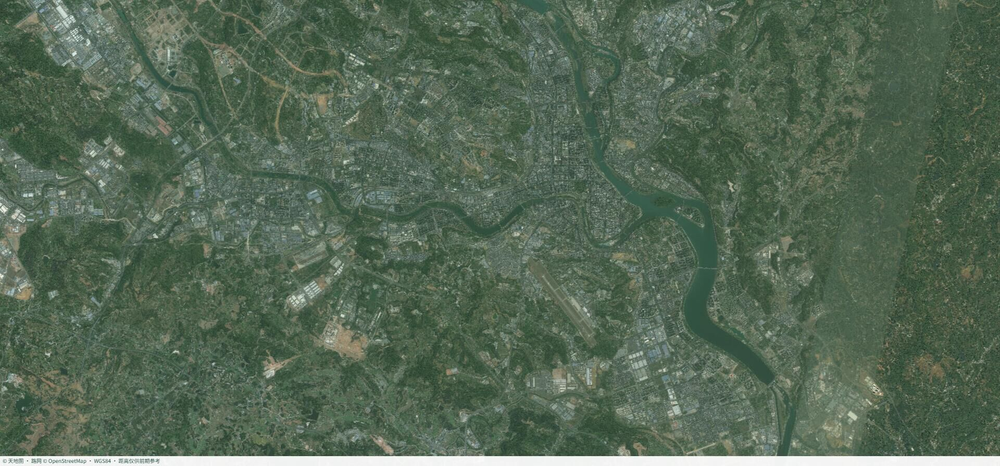
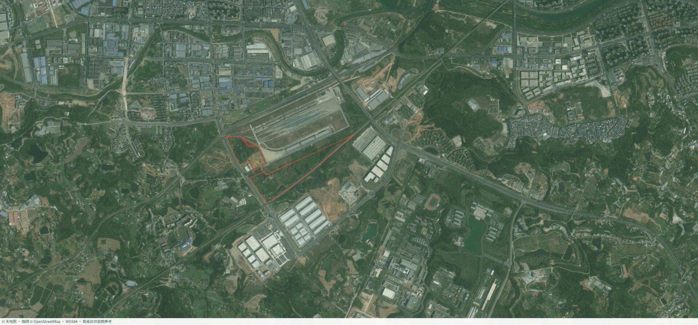
SITE第一部分 / 场地分析
拖动旋转，滚轮缩放。点选高程读取地面坐标、模型标高和坡度；剖面模式依次选择起点与终点生成地形剖面。
04 / 卫星图与 DXF 合图
铁岗大道一侧为城市入口界面，A 地块承接专业监管和保税仓储，B 地块面向城市主干道组织配套办公、酒店和汽车服务。
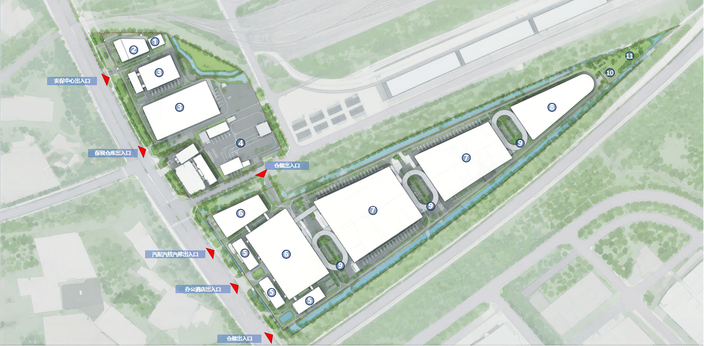
E1E1｜一期已建海关监管第二部分 / 规划条件分析
规划条件取值与方案回应逐项对应。建筑密度和绿地率为本轮控制目标，后续结合总图实算复核。
总净用地245,460.29㎡，仓储与配套分别按93%和7%控制。铁岗大道主入口按DXF总图位置表达，后续开展规划沟通和交通专项论证。
第一部分 / 场地分析
07 / 初步功能布局生成
拖动 SU 体量模型观察组合关系；点击右侧逻辑按钮，按运营关系逐步生成建筑布局。
点击右侧功能关系，查看布局逻辑和模型高亮。
08 / 分区功能与指标
从功能安排到计容面积同步核对，避免体量生成脱离规划条件。
档案库、金库、安保办公、宿舍、W1/W2 保税仓库，与一期海关监管设施相邻。
建筑面积 45,966.16㎡计容面积 77,008.53㎡配套办公、酒店、汽配汽检汽修、W3/W4/W5/W6/W7及充换电、停车、光伏储能预留。
建筑面积 172,537.53㎡计容面积 183,685.78㎡09 / 体块生成与总平面
金库＋档案库独立成区保障私密性，保税仓库与一期海关监管紧邻，为二者合并管理提供条件；南侧用地临街展示面设置办公、酒店、汽配汽检汽修，最大化商业价值并利于城市形象；地块纵深部分设置仓储，末端设冻库及其配套。
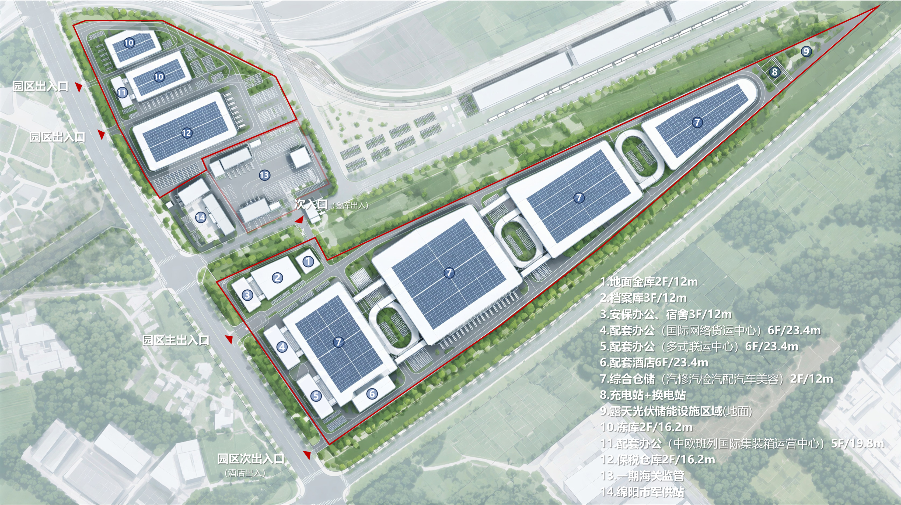
0102030405060708090909020303040505050606070708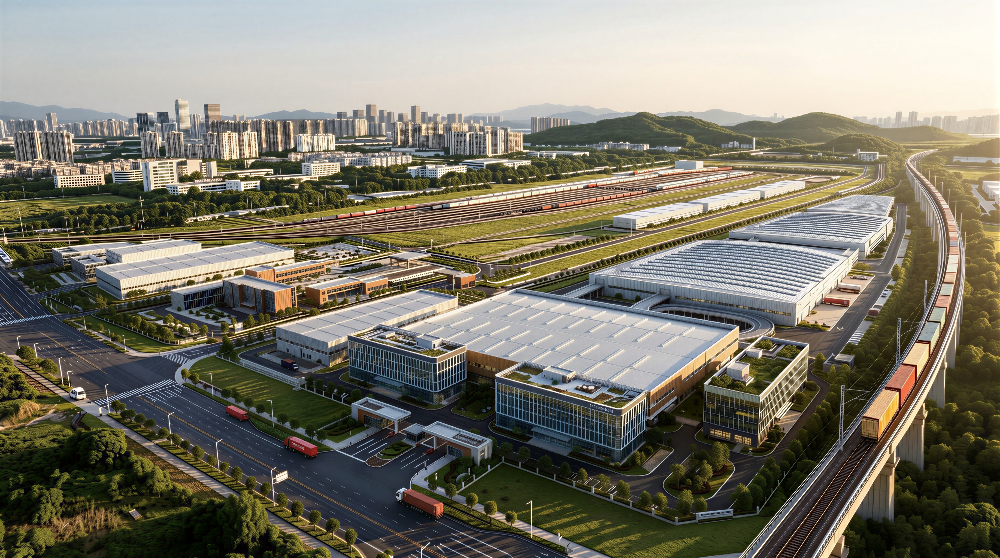
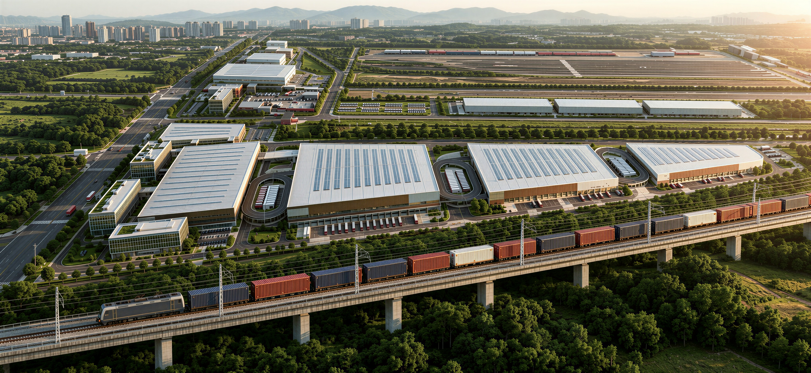
第三部分 / 方案展示
拖动旋转，滚轮缩放。点击建筑体块查看编号、功能、层数、建筑面积和计容面积；坡道仅参与空间展示，不进入点击查询。
第四部分 / 指标与投资
项目整体口径｜含海关中心；三类改造仓库均计入仓储类用房。
| 统计指标 | 北侧 A＋C＋D | 南侧 B | 项目合计 |
|---|---|---|---|
| 用地面积 | 72,424.91㎡ | 173,035.38㎡ | 245,460.29㎡ |
| 总建筑面积 | 45,966.16㎡ | 180,223.09㎡ | 226,189.25㎡ |
| 总计容面积 | 77,008.53㎡ | 191,371.36㎡ | 268,379.89㎡ |
| 建筑占地面积 | 待复核 | 待复核 | 122,975.61㎡（原总表） |
| 建筑密度 | 50.1%（统一取值） | 50.1%（统一取值） | 50.1%（原总表） |
| 仓储类建筑面积 | 39,370.69㎡ | 152,890.18㎡ | 192,260.87㎡ |
| 仓储类计容面积 | 70,413.06㎡ | 164,038.45㎡ | 234,451.51㎡ |
| 生活及配套建筑面积 | 6,595.47㎡ | 27,332.91㎡ | 33,928.38㎡ |
| 生活及配套计容面积 | 6,595.47㎡ | 27,332.91㎡ | 33,928.38㎡ |
北侧用地：A 68,902.59 ＋ C 3,508.02 ＋ D 14.30 = 72,424.91㎡。北侧统计含一期海关中心；南侧为B地块。两栋保税仓库均归北侧组团，名称中的“南／北栋”不代表南侧B地块。
建筑密度口径：按本次确认，北侧ACD与南侧B均统一填写50.1%，并非各区建筑占地复核结果。分区占地面积仍待核；全园93%／7%的功能占地分摊比例不用于南北地块划分。
| 建筑名称 | 申报功能分类¹ | 建筑面积 | 计容面积 | 改造后／运营业态备注 |
|---|---|---|---|---|
| 保税仓库1 | 仓储类 | 23,088.63㎡ | 46,177.27㎡ | 保税仓储 |
| 保税仓库2 | 仓储类 | 7,787.54㎡ | 15,575.09㎡ | 保税仓储 |
| 改造仓库2 | 仓储类 | 5,281.59㎡ | 5,281.59㎡ | 改造后档案存储、数字档案及资料仓储 |
| 改造仓库3 | 仓储类 | 1,368.76㎡ | 1,368.76㎡ | 改造后金库及高安全等级仓储 |
| 海关中心剩余建筑 | 仓储类 | 1,844.17㎡ | 2,010.35㎡ | 一期海关监管剩余建筑，沿用仓储归类 |
| 安保办公及宿舍 | 生活及配套类 | 1,916.82㎡ | 1,916.82㎡ | 安保办公及宿舍 |
| 北侧配套办公 | 生活及配套类 | 1,916.82㎡ | 1,916.82㎡ | 园区配套办公 |
| 海关中心配套设施 | 生活及配套类 | 2,761.83㎡ | 2,761.83㎡ | 一期海关中心配套 |
| 合计 | — | 45,966.16㎡ | 77,008.53㎡ |
| 建筑名称 | 申报功能分类¹ | 建筑面积 | 计容面积 | 改造后／运营业态备注 |
|---|---|---|---|---|
| 仓库1 | 仓储类 | 54,474.87㎡ | 54,474.87㎡ | 灵活仓储 |
| 仓库2 | 仓储类 | 38,496.92㎡ | 38,496.92㎡ | 灵活仓储 |
| 仓库3 | 仓储类 | 10,895.34㎡ | 10,895.34㎡ | 仓储；现状体块展示为汽配汽检汽修，报建归类沿用最新指标表 |
| 改造仓库1 | 仓储类 | 37,874.78㎡ | 37,874.78㎡ | 现状汽修汽检；改造后汽配、汽修、汽检、美容及相关仓储服务 |
| 冻库 | 仓储类 | 11,148.27㎡ | 22,296.54㎡ | 冷链冷冻仓储 |
| 南侧配套办公1 | 生活及配套类 | 9,110.97㎡ | 9,110.97㎡ | 园区配套办公 |
| 南侧配套办公2 | 生活及配套类 | 9,110.97㎡ | 9,110.97㎡ | 园区配套办公 |
| 酒店运营功能 | 生活及配套类 | 9,110.97㎡ | 9,110.97㎡ | 酒店运营 |
| 合计 | — | 180,223.09㎡ | 191,371.36㎡ |
¹ 申报分类沿用本次提供的指标口径，非审批确认。三类改造仓库均计入仓储类；运营业态备注不另行重复计面积。最终用途及改造报建以批准图纸和主管部门认定为准。
本表按现总图组团及最新面积表归集；C、D未单列独立建筑，计入北侧合并用地。建筑密度报建复核需提供与本版相符的两区建筑占地统计（含一期及按报建口径需计入的构筑物）。
| 综合指标 | 数据 |
|---|---|
| 总用地面积 | 245,460.29㎡ |
| 总建筑面积 | 226,189.25㎡ |
| 总计容建筑面积 | 268,379.89㎡ |
| 建筑密度 | 50.1% |
| 建筑占地面积 | 122,975.61㎡ |
| 绿地率 | 5.1% |
| 绿地面积 | 12,518.47㎡ |
| 整体容积率 | 1.093 |
| 分类指标 | 仓储类用房 | 生活及配套用房 |
|---|---|---|
| 建筑面积 | 192,260.87㎡ | 33,928.38㎡ |
| 占总建筑面积比例 | 84.99% | 15.00% |
| 占地面积 | 114,367.31㎡ | 8,608.29㎡ |
| 占地比例 | 93.0% | 7.0% |
| 计容面积 | 234,451.51㎡ | 33,928.38㎡ |
| 容积率 | 1.027 | 1.975 |
总建筑占地面积按建筑密度50.1%计算，再按现行总图仓储93%、生活及配套7%的比例分摊。此处93%/7%为建筑占地分摊比例，不等同于项目总用地的实测分区面积。
分类容积率沿用提供口径，不直接相加；仓储建筑面积比例84.99%沿用提供值，按所列面积复算约85.00%。分类占地相加较总占地少0.01㎡，为显示尾差。
| 双倍计容建筑 | 建筑面积 | 双倍计容面积 | 增加计容面积 |
|---|---|---|---|
| 保税仓库1 | 23,088.63㎡ | 46,177.27㎡ | 23,088.64㎡ |
| 保税仓库2 | 7,787.54㎡ | 15,575.09㎡ | 7,787.55㎡ |
| 冻库 | 11,148.27㎡ | 22,296.54㎡ | 11,148.27㎡ |
| 合计 | 42,024.44㎡ | 84,048.90㎡ | 42,024.46㎡ |
268,379.89 − 226,189.25 = 42,190.64㎡ = 双倍计容增加42,024.46㎡ ＋ 海关中心剩余建筑计容差额166.18㎡。
各项双倍计容数值按提供表保留；小数尾差未擅自调整。计容规则及适用条件以项目规划审批口径为准。
| 建筑名称 | 功能归类 | 建筑面积 | 计容面积 |
|---|---|---|---|
| 保税仓库1 | 仓储类 | 23,088.63㎡ | 46,177.27㎡ |
| 保税仓库2 | 仓储类 | 7,787.54㎡ | 15,575.09㎡ |
| 仓库1 | 仓储类 | 54,474.87㎡ | 54,474.87㎡ |
| 仓库2 | 仓储类 | 38,496.92㎡ | 38,496.92㎡ |
| 仓库3 | 仓储类 | 10,895.34㎡ | 10,895.34㎡ |
| 改造仓库1 | 仓储类 | 37,874.78㎡ | 37,874.78㎡ |
| 改造仓库2 | 仓储类 | 5,281.59㎡ | 5,281.59㎡ |
| 改造仓库3 | 仓储类 | 1,368.76㎡ | 1,368.76㎡ |
| 冻库 | 仓储类 | 11,148.27㎡ | 22,296.54㎡ |
| 海关中心剩余建筑 | 仓储类 | 1,844.17㎡ | 2,010.35㎡ |
| 仓储类合计 | — | 192,260.87㎡ | 234,451.51㎡ |
| 安保办公及宿舍 | 生活及配套类 | 1,916.82㎡ | 1,916.82㎡ |
| 北侧配套办公 | 生活及配套类 | 1,916.82㎡ | 1,916.82㎡ |
| 南侧配套办公1 | 生活及配套类 | 9,110.97㎡ | 9,110.97㎡ |
| 南侧配套办公2 | 生活及配套类 | 9,110.97㎡ | 9,110.97㎡ |
| 酒店运营功能 | 生活及配套类 | 9,110.97㎡ | 9,110.97㎡ |
| 海关中心配套设施 | 生活及配套类 | 2,761.83㎡ | 2,761.83㎡ |
| 生活及配套类合计 | — | 33,928.38㎡ | 33,928.38㎡ |
| 项目总计 | — | 226,189.25㎡ | 268,379.89㎡ |
改造仓库1：现状汽修汽检，后期可改造为汽配、汽修、汽检、美容及相关仓储服务。
改造仓库2：现状档案馆，后期用于档案存储、数字档案及资料仓储。
改造仓库3：现状金库，后期用于金库及高安全等级仓储。三类均计入仓储类用房。
14 / 工程造价估算
只计算工程造价投资；点击“恢复默认值”回到方案阶段基准参数。
默认单方造价：仓储1800、办公/宿舍2000、酒店2200、汽修汽检2000、道路及场地450、绿化及景观450、坡道构筑物1200、充换电/光伏储能1800 元/㎡。
15 / 方案结论与下一步
铁岗大道是唯一城市道路界面，主入口按 DXF 位置表达，办公与酒店承担园区形象展示。
档案、金库、安保、保税仓储与一期海关监管形成专业组团。
新时代物流园区多业态并存，客货分流；12米宽、3%坡度坡道连接 W3、W4、W5、W7，形成连续立体物流系统。
完成规划沟通、交通专项、指标复核和工程造价校准。
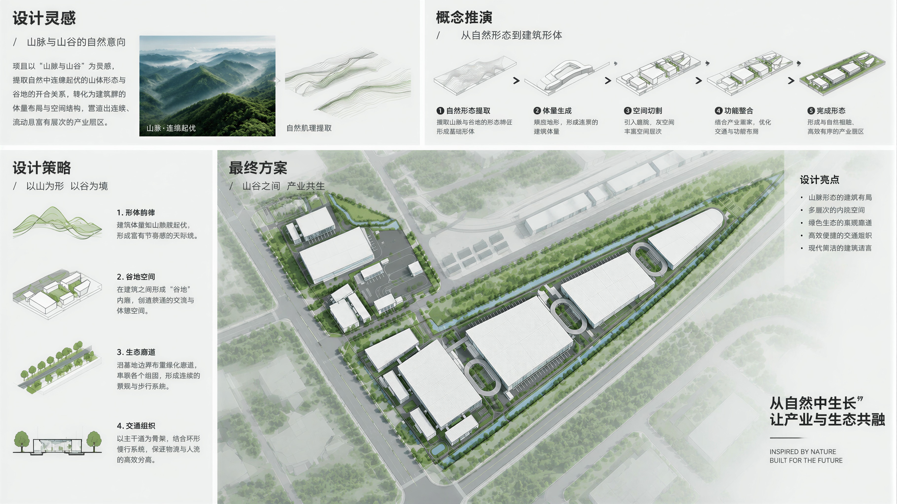
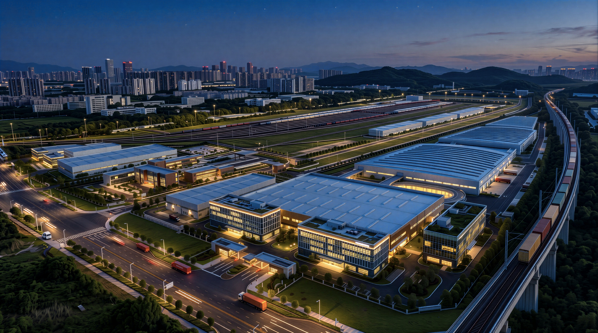
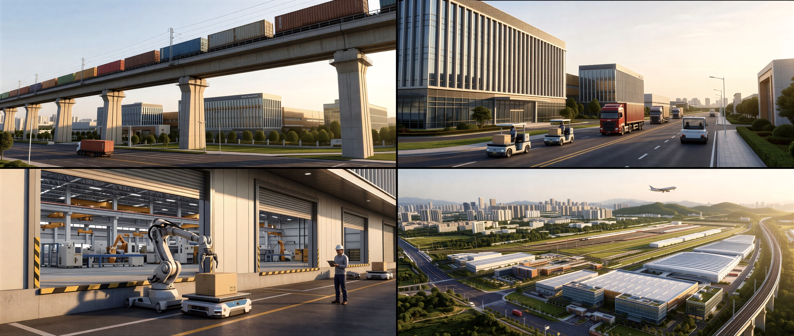
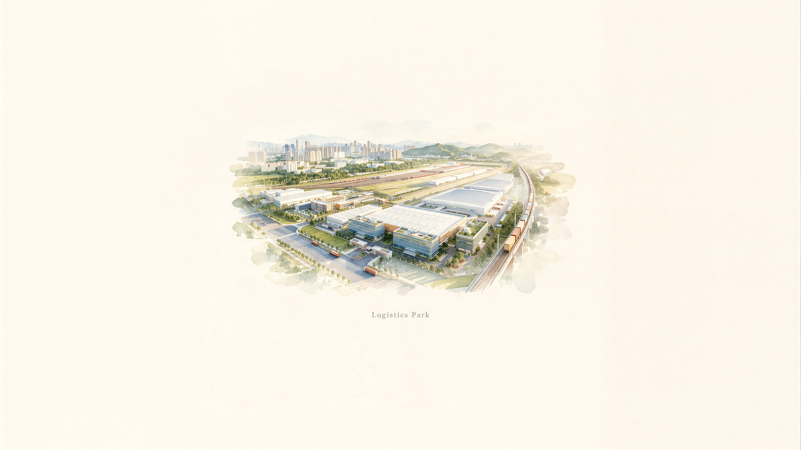
零碳园区专项 / 01 建设目标
本次仅考虑南侧B地块｜173,035.38㎡，约17.30公顷
通过规划、技术和运营管理系统减碳，使园区生产生活的CO₂排放接近零，并为进一步实现净零创造条件；不是仅安装光伏。国家发展改革委政策解读 ↗
达不到核心要求，原则上不得申请验收；该口径仅核算CO₂。
确不具备实施条件的指标，须按文件说明原因。
北侧A地块、一期海关中心、C/D地块及铁路货场不纳入本次建设和核算范围。
国家级主体原则上为省级及以上开发区等符合条件的园区，还需计量基础及近3年安全环境等条件。拟按“园中园”论证管理责任和申报资格。
B地块年能耗尚未测算；若低于20万吨标准煤，不能直接套用所列档位。建设名单不等于验收通过。
零碳园区专项 / 02 国内案例
以物流园运营减碳为主案例，对照园区能源专项及屋顶光伏工程；不将案例认证等同于国家级验收。
借鉴：屋顶光伏、设备与物流效率提升、用能电气化及运营核算。历史认证使用CCER抵消剩余排放，不直接套用国家级验收。
借鉴：光伏、储能、充电与能效平台系统统筹。金额为2023年披露计划，非已完成投资，也非本项目报价。
服务天津经开区智能无人装备产业园近零碳建设。借鉴：利用存量屋顶先实施可计量的绿电项目。
零碳园区专项 / 03 策略与措施
策略建议｜以南侧仓储、W7冻库、办公酒店与场内物流为对象，不扩大到北侧及铁路货场。
按B地块红线建账；分项计量仓储、冻库、办公酒店、充换电。识别跨边界购电、供能与运输数据，避免重复统计。
利用B地块仓储及适宜配套屋顶，复核荷载、遮挡和设备检修空间；以实测消纳能力确定容量，绿电采购补充缺口。
优化保温、冷桥和门区管理；高效制冷、分区控制、LED及设备变频；论证蓄冷和余热利用，并单列制冷剂管理。
先形成冷库与充电负荷曲线，再配置储能或蓄冷；统筹变配电、峰谷调节、消防、检修和运行安全，不预设容量。
服务电动叉车、短倒及物流车辆，优化预约装卸和场内路线。铁路转运作为协同减排措施，园外运输效益单列。
接入光伏、储能、购电及重点设备，形成年度核算与核查资料；区分国家级CO₂口径与其他温室气体评价要求。
零碳园区专项 / 04 总图落位
绿色虚线为建设范围示意；北侧及一期淡化，仅作区位背景。

第三部分 / 方案二
场地分析、体块组织与建筑细部，结合屋顶光伏和绿色物流预留。
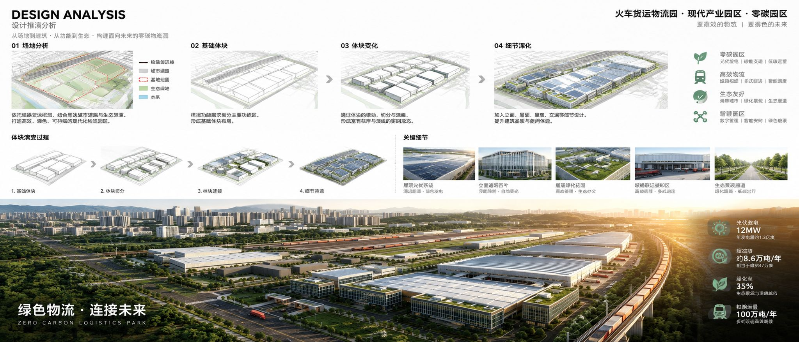
零碳测算采用B地块边界。建设指标以最新面积表为准，图面中的概念性能指标不作为测算依据。
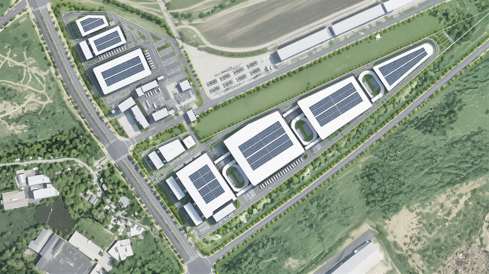
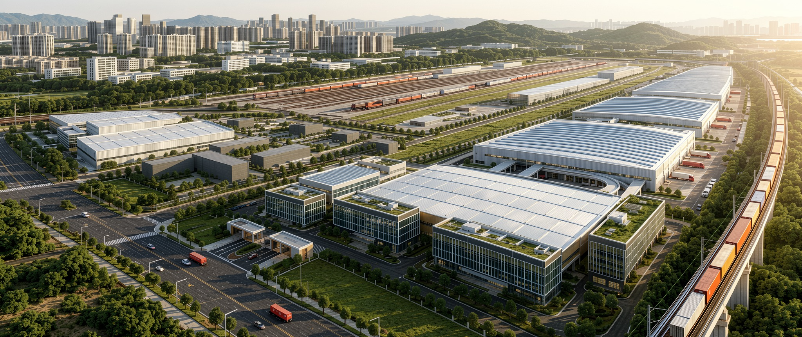
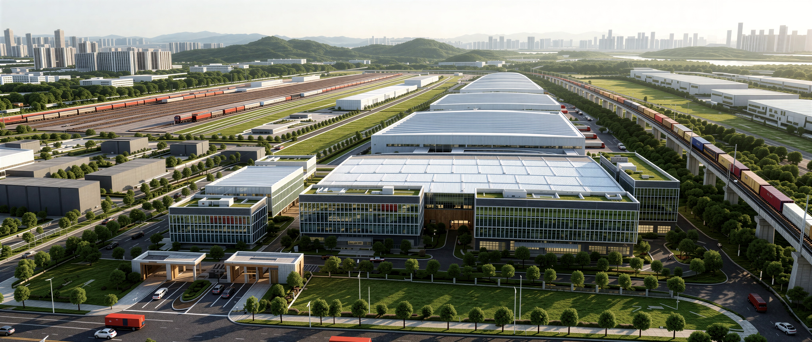
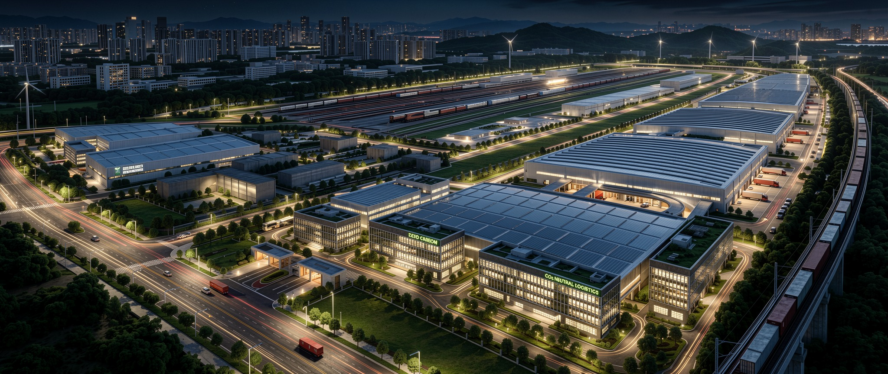
第三部分 / 方案二
1012体量F1原模型，左键旋转、滚轮缩放，右键或Shift平移。点击建筑查询，编号对应新PPT功能标注。